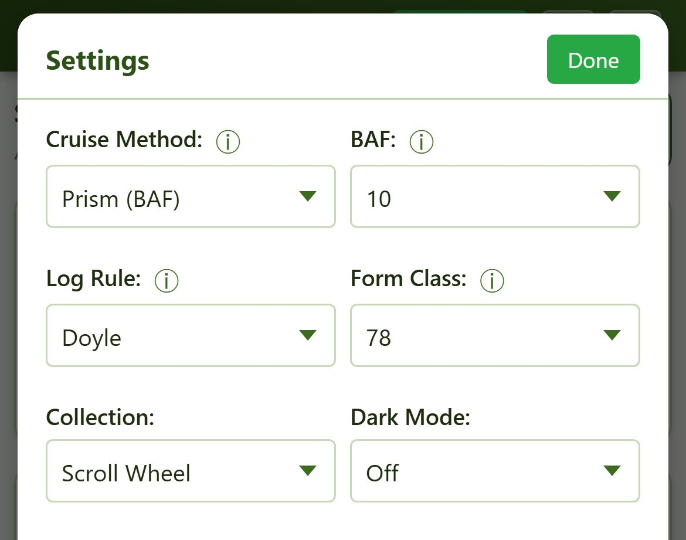
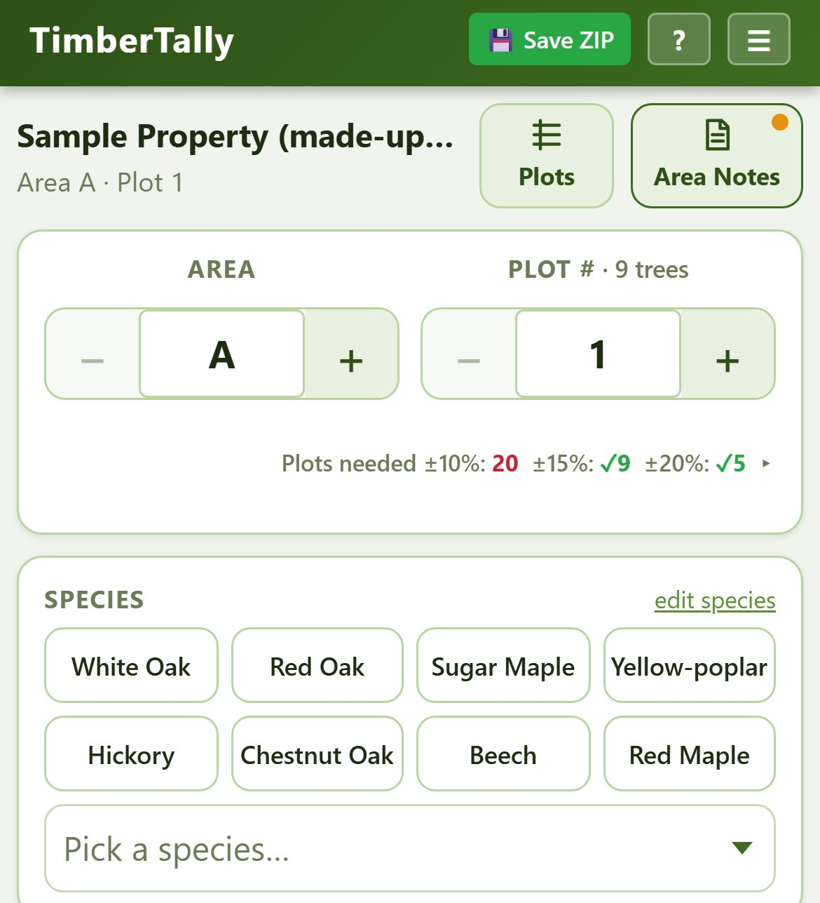
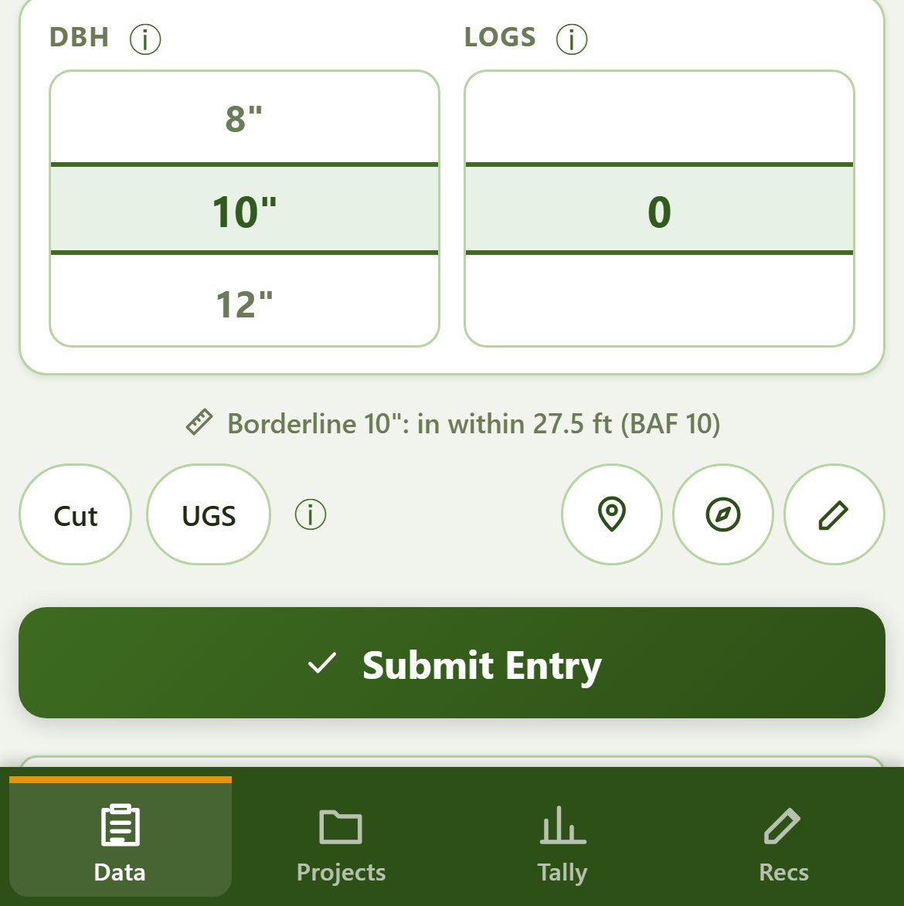
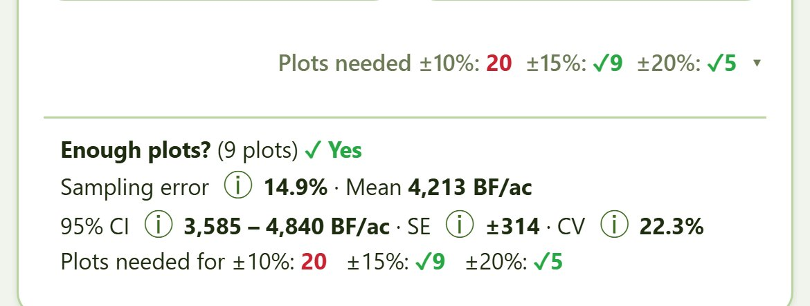
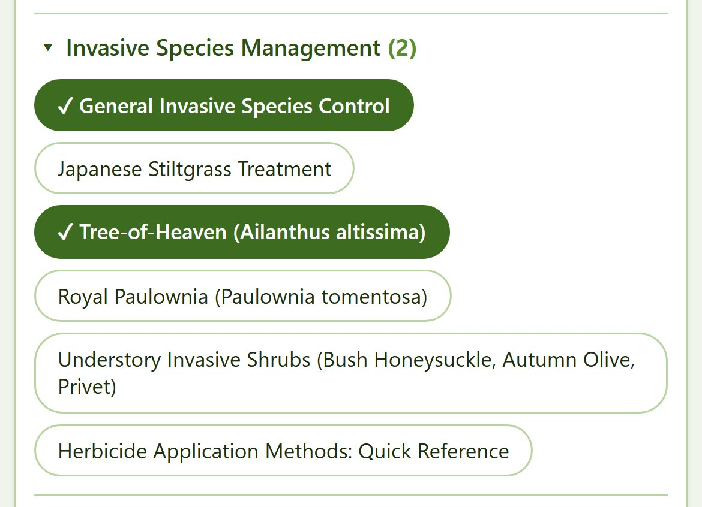

Tally timber on your phone with no signal, then save one ZIP of reports.
Page 1 Set up & enter trees
1
Install it (once)
Open the TimberTally link on your phone, then ☰ → Install App.
iPhone / iPad: Safari → Share → Add to Home Screen.
Android: Chrome → ⋮ → Install app (Samsung Internet: ☰ → Add page to → Home screen).
Computer: Chrome or Edge → the install icon at the right end of the address bar.
From then on it opens from its own tree icon and works with no signal. When an update is ready, a banner offers Update Now.
2
Set up before you cruise

Settings
☰ → Settings:
Cruise Method: Prism (BAF 5–40) or Fixed plot (1/4 to 1/50 acre).
Log Rule: Doyle, Scribner or International ¼″. Form Class (Doyle only): 70–86.
Collection:Scroll Wheel (spin DBH and logs, then Submit) or Tap Grid (tap a DBH, then logs: saved).
Dark Mode: Off, On or System. Settings save as you change them; tap Done.
One project per property: Projects → + New Project, then type its name.
3
Enter trees on the Data tab

Area, Plot & species

DBH, Logs & Submit
Set Area and Plot # with − / + (or swipe across them).
Tap a species (your 8 most-used are buttons; the rest are in the list), spin DBH and Logs, tap Cut or UGS if it applies, then Submit Entry.
No trees in the plot? Tap Record empty plot under Submit so it still counts.
GPS: once location is allowed, each plot's 3rd tree is located; or tap GPS for the next tree.
Borderline tree? Tap the limiting-distance line under the wheels and enter the measured distance: IN or OUT.
Made a mistake? Tap the tree in Recent Entries to edit or delete it.
Plots lists every plot (go to, move, renumber); Area Notes holds notes, acres and regeneration.
⚠ Your data lives only on this device
Every tree is saved the moment you submit it, but only on this phone. Back up often: Projects → Save Backup (to Files, email or a cloud drive). The app reminds you after 7 days.
The bottom tabs
Data
enter trees; Submit sits just above the tabs
Projects
switch, back up, restore, merge, import CSV, plot locations
Settings, Help & Tours, Quick Start sheet, Standard Wording, Install App, Check for Updates, Info / Contact
Just looking?
Projects → Try the Sample Project adds a made-up property with two Areas. Your own projects are not changed.
What's this word?
Tap the small ⓘ beside a term (DBH, BAF, BA, TPA, QMD, CV, stocking…) for a one-line meaning.
Check, Write Up & Save
Before you leave the woods, and back at the desk.
Page 2 Results & backup
4
Check your work

Enough plots? (tap to open)
Enough plots? Under Area / Plot on the Data tab: plots needed for ±10, 15 and 20% sampling error (✓ when you have them). Tap it for the sampling error, mean volume, confidence interval and CV.
Tally: trees, basal area and board feet per acre, QMD, the Gingrich stocking chart (with the stand left after a cut) and stand charts. Pick one Area or all.
✓ Check Data (Tally tab) finds skipped plots, likely double entries, log counts beyond the volume table, big trees and missing species or DBH. Tap an issue to fix the tree.
5
Write the recommendations

Tap to add (Area A)
Recs: pick the Area and the County (its NRCS office phone fills in).
Open a library category and tap a recommendation to add it. Some ask for a detail, such as which invasive species.
Edit the wording for this Area, reorder or remove; add your own.
Preview → Copy Recommendations (formatting survives a paste into Word) or Copy as plain text for an email.
☰ → Standard Wording: rewrite the library in your own words or add your own library recommendations. Used from then on; Areas that already have one keep their text.
6
Save & back up
💾 Save ZIP (top right): for each Area a CSV, Stand & Stock table, Summary Report and Graphs page; a Property Summary with 2+ Areas; the stocking chart and Area notes.
Projects → Save Backup: one .json with every project, species list, plan details and Standard Wording. Restore Backup adds them on another device; nothing there is replaced.
⇄ Merge Another Device: combine a second cruiser's backup or CSV into this project (new plots, or the same plots tallied together).